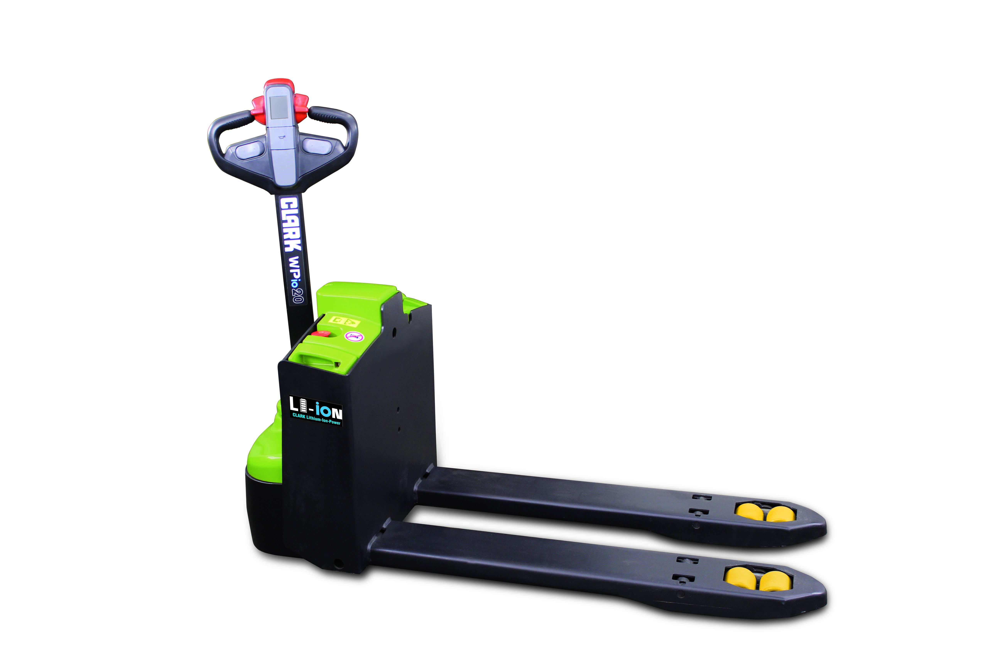

Para o CD onde a velocidade no corredor é produtividade real. Operador a bordo, direção elétrica, 12 km/h.
Solicitar proposta de compra
O cronômetro no CD de uma grande rede de e-commerce em Goiânia marcava os ciclos. Com as paleteiras walkie antigas, o percurso de 80 metros entre o picking e a doca demorava 4 minutos ida e volta. O operador caminhava. A máquina andava no ritmo da pessoa.
Com a PPXs20 a bordo, o mesmo percurso levava 1 minuto e meio. O operador não caminhava. E a direção elétrica garantia que ele chegasse no final do turno sem dor nos pulsos.
A Clark PPXs20 é uma paleteira elétrica do tipo rider — o operador fica a bordo durante toda a operação. Com velocidade de até 12 km/h e direção elétrica, ela é a máquina para o CD onde a distância percorrida por turno passa de 2 km por operador.
A diferença de produtividade entre uma walkie convencional (5 km/h, operador a pé) e a PPXs20 (12 km/h, operador a bordo) não é linear. É exponencial quando se multiplica pelos ciclos do dia: 40 viagens por turno, 80 metros cada, dois turnos. A PPXs20 encurta esse tempo pela metade.
A bateria de 375 Ah é dimensionada para operações de alto ciclo. Para dois turnos, o perfil de carregamento de oportunidade entre turnos costuma ser suficiente. Para operações 24h, a Move Máquinas avalia o ciclo e recomenda a configuração de carregamento adequada.
| Especificação | Clark PPXs20 |
|---|---|
| Capacidade nominal | 2.000 kg |
| Bateria | 375 Ah |
| Velocidade máxima | 12 km/h |
| Direção | Elétrica |
| Tipo de operador | Rider (a bordo) |
| Emissões | Zero |
| Normas | NR-11, NR-12 |
| Uso | Interno |
A PPXs20 opera em ambiente interno plano. Para operações mistas com desnível ou piso irregular externo, a família Clark LXE (Yard Truck) é a indicada. Para cargas acima de 2.000 kg, a família WPX (3.500 kg) e a linha de empilhadeiras Clark GEX e LXE cobrem a necessidade.
A PPXs20 tem plataforma rider padrão. A PPFXs20 tem plataforma totalmente integrada ao chassi com paredes laterais acolchoadas. Para operações onde o operador faz muitas manobras em corredor estreito, a PPFXs20 oferece proteção adicional das pernas. Para operações com percurso mais reto, a PPXs20 atende com menor custo.
Nem toda operação justifica o investimento em uma rider elétrica. Ser honesto sobre isso é o que permite fazer a escolha certa.
Percurso médio acima de 40 metros, frequência acima de 25 ciclos por hora, turnos de 8+ horas, operadores com queixa de cansaço no final do turno, ou quando o custo de mão de obra adicional é maior que a amortização da máquina.
Percurso curto (até 30 metros), baixo ciclo (menos de 15 viagens por hora), orçamento limitado, ou quando o corredor não comporta a largura de uma rider.
No CD do e-commerce em Goiânia, o resultado da PPXs20 apareceu no relatório do segundo mês. O número de pedidos separados por turno subiu 34%. A equipe não cresceu. A máquina foi diferente.
O operador do primeiro turno, que antes reclamava de cansaço nos pulsos às 15h, passou a fechar o expediente sem queixa. A direção elétrica fez isso.
| Especificação | Valor |
|---|---|
| Capacidade nominal | 2.000 kg |
| Bateria | 375 Ah |
| Velocidade máxima | 12 km/h |
| Direção | Elétrica |
| Tipo de operador | Rider (a bordo) |
| Tipo de plataforma | Rider padrão |
| Emissões | Zero |
| Normas | NR-11, NR-12 |
| Uso | Interno (piso plano) |
A PPFXs20 tem plataforma completamente integrada ao chassi com paredes laterais acolchoadas. A PPXs20 tem plataforma rider padrão. Para operações com muitas manobras em corredor estreito, a PPFXs20 protege melhor as pernas do operador. Para percursos mais retos, a PPXs20 atende.
A PWio20 tem plataforma fixa menor e velocidade mais baixa. A PPXs20 é uma rider completa com 12 km/h e direção elétrica. A PWio20 resolve percursos médios. A PPXs20 é para operações de alto ciclo onde a velocidade é um diferencial de produtividade.
Sim. A NR-11 exige treinamento e habilitação para todos os operadores de empilhadeiras e paleteiras elétricas. O operador deve ser treinado no modelo específico. A Move Máquinas pode orientar sobre os requisitos para a sua operação.
Para a especificação exata do raio de giro, consulte a Move Máquinas. O dado varia conforme a configuração de garfo e rodas. A equipe técnica informa o raio real e confirma se ela passa no seu corredor.
Sim. Zero emissão e motor elétrico operam normalmente em ambiente refrigerado. Para câmaras abaixo de -15°C, consulte a Move Máquinas para especificação de bateria adequada ao ambiente.
A Move Máquinas cobre Goiânia e o Centro-Oeste. O prazo depende do estoque no momento da compra. Solicite proposta no formulário abaixo e a equipe retorna com prazo real em até 1 dia útil.
Informe os dados abaixo. A Move Máquinas retorna com proposta em até 1 dia útil.
Ou fale direto pelo WhatsApp: Chamar a Move Máquinas